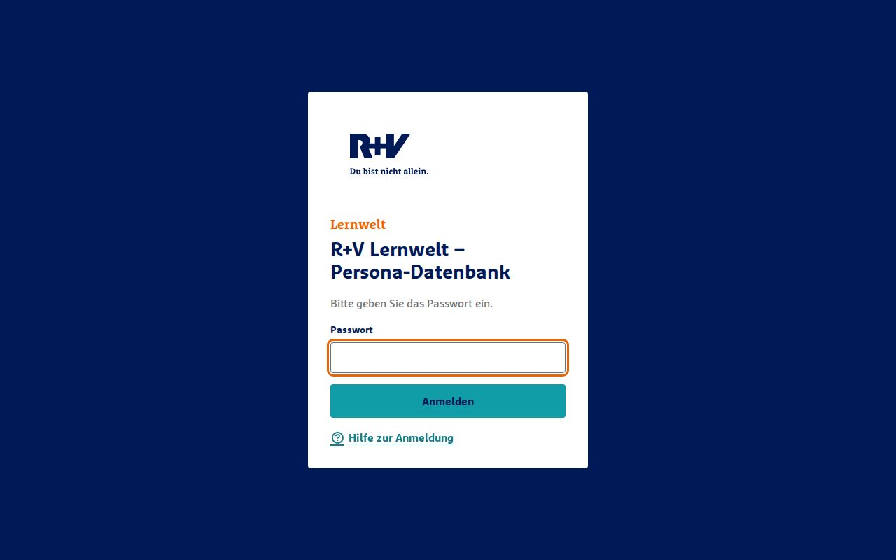
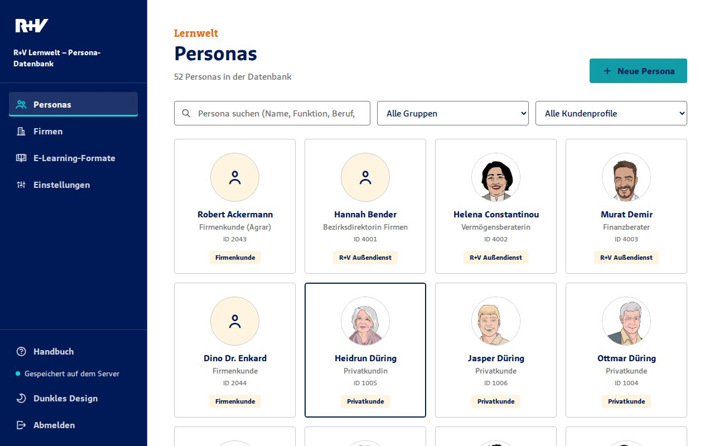
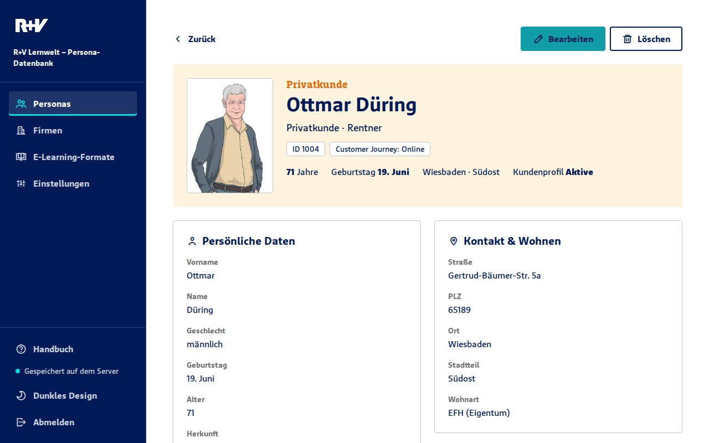
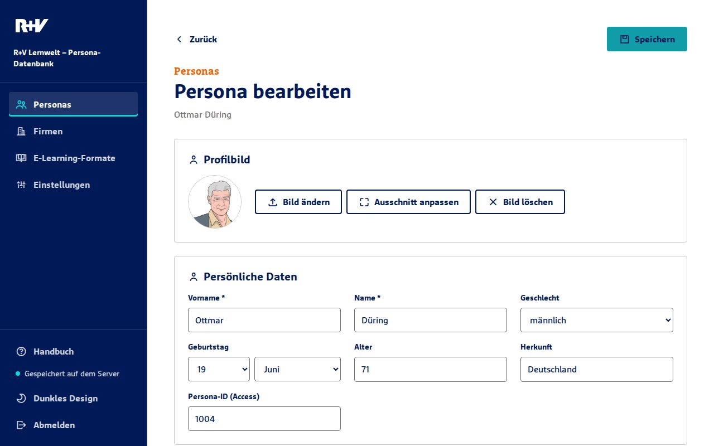
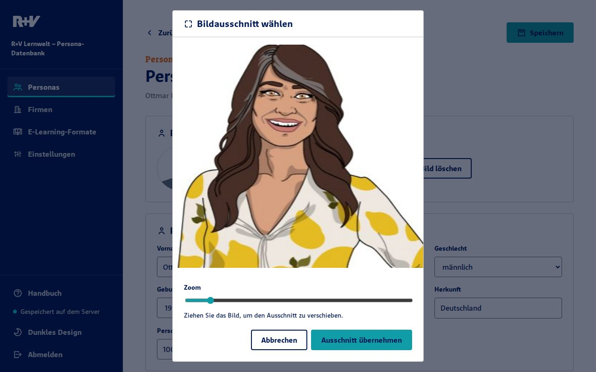
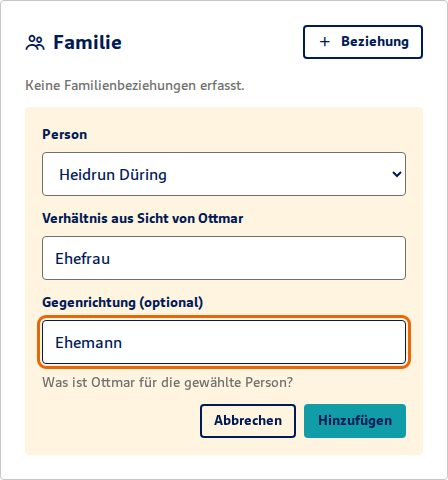
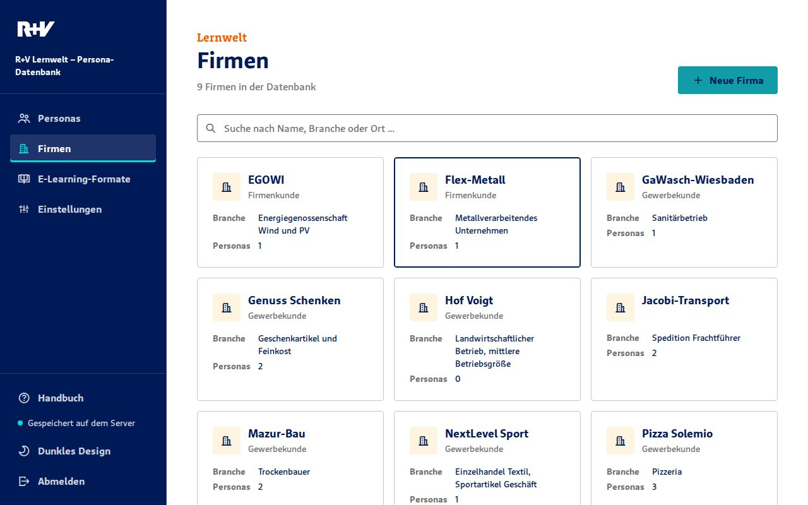
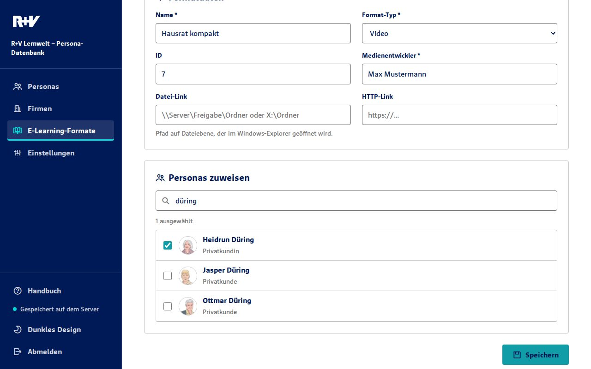
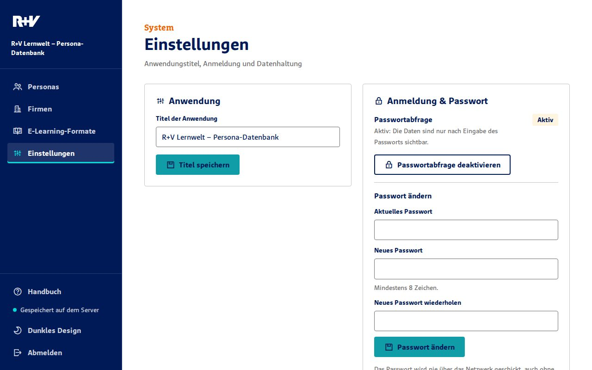
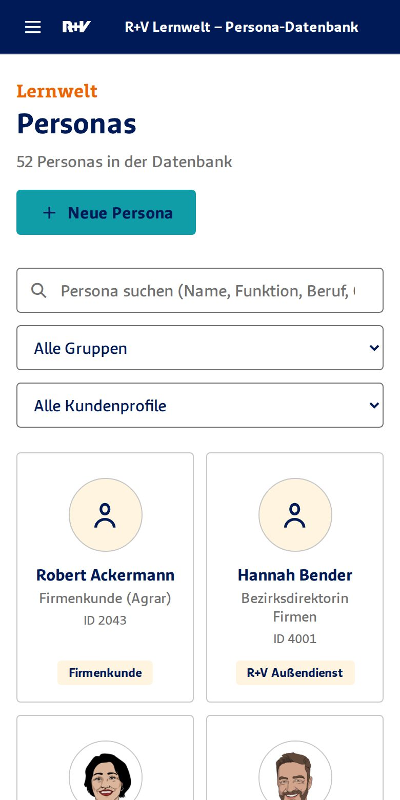

Kapitel 1
Überblick
Die Persona-Datenbank sammelt die Figuren, die in den E-Learning-Formaten der Lernwelt auftreten: Kundinnen und Kunden, Mitarbeitende im Innen- und Außendienst, Bankberater und ihre Firmen. Wer ein neues Format plant, findet hier Lebenslauf, Charakter, Wohnsituation, Familie, Bildmaterial und Stimme jeder Persona an einem Ort.
Die Anwendung kennt drei Bereiche, die Sie über die Navigation links erreichen:
- Personas
- Die Figuren mit allen Angaben, ihrem Profilbild und ihren Beziehungen untereinander.
- Firmen
- Unternehmen und Betriebe, denen Personas angehören, zum Beispiel als Inhaberin oder Geschäftsführer.
- E-Learning-Formate
- Lernprogramme, Videos und Podcasts mit den Personas, die darin vorkommen.
Alle Änderungen werden sofort auf dem Server gespeichert und sind für alle anderen sichtbar, sobald diese die Seite neu laden.
Kapitel 2
Anmelden und Abmelden

- Öffnen Sie die Adresse der Anwendung im Browser (Edge, Chrome oder Firefox).
- Geben Sie das gemeinsame Passwort ein und wählen Sie Anmelden. Die Prüfung dauert etwa eine Sekunde.
- Zum Abmelden wählen Sie unten in der Navigation Abmelden.
Die Anmeldung gilt 10 Stunden. Danach fragt die Anwendung erneut nach dem Passwort. Nach fünf falschen Eingaben ist die Anmeldung von Ihrem Rechner aus 15 Minuten gesperrt.
Sicherheit: Das Passwort wird nie über das Netzwerk geschickt, auch nicht ohne HTTPS. Ihr Browser weist dem Server nur nach, dass er das Passwort kennt. Wählen Sie trotzdem ein langes Passwort, denn wer den Netzwerkverkehr mitliest, kann kurze Passwörter durchprobieren.
Kapitel 3
Personas finden

Nach der Anmeldung sehen Sie alle Personas als Kacheln, alphabetisch nach Nachnamen. Jede Kachel zeigt Bild, Name, Funktion in der Lernwelt, Persona-ID und Gruppe.
- Suche: Tippen Sie einen Teil von Name, Funktion, Beruf, Ort, Gruppe oder der Persona-ID. Die Liste filtert sofort.
- Gruppe und Kundenprofil: Grenzen Sie die Liste zusätzlich ein. Suche und beide Filter lassen sich kombinieren. Aktive Filter haben einen dicken Rahmen.
- Über der Liste steht, wie viele Personas gerade angezeigt werden.
Ein Klick auf eine Kachel öffnet die Persona.
Kapitel 4
Eine Persona ansehen

Oben stehen Bild, Gruppe, Name, Funktion und Beruf sowie die wichtigsten Eckdaten. Darunter folgen die Abschnitte Persönliche Daten, Kontakt & Wohnen, Beruf & Rolle, Biografie, Familie, Persönlichkeit, Firmenzugehörigkeit, Voiceover & Avatar, Links & Medien und E-Learning-Formate. Leere Felder werden ausgeblendet.
Bildordner öffnen
Unter Links & Medien steht der Ordner mit dem Bildmaterial der Persona auf dem Netzlaufwerk.
- Ordner im Explorer öffnen versucht, den Ordner direkt zu öffnen. Viele Browser blockieren das aus Sicherheitsgründen.
- Pfad kopieren legt den Pfad in die Zwischenablage. Fügen Sie ihn in die Adresszeile des Windows-Explorers ein und drücken Sie die Eingabetaste.
Verknüpfte Familienmitglieder, Firmen und Formate sind anklickbar und führen direkt zur jeweiligen Seite.
Kapitel 5
Personas anlegen und bearbeiten

- Für eine neue Persona wählen Sie in der Übersicht Neue Persona. Für eine bestehende öffnen Sie die Persona und wählen Bearbeiten.
- Füllen Sie die Felder aus. Pflicht sind nur Vorname und Name.
- Wählen Sie Speichern (oben oder am Ende des Formulars). Sie landen danach auf der Detailseite.
Besondere Felder
- Geburtstag
- Tag und Monat, ohne Jahr. Das Alter steht in einem eigenen Feld.
- Persona-ID
- Die Nummer aus der früheren Access-Datenbank, z. B. 1004. Jede Nummer darf nur einmal vorkommen.
- Gruppe, Kundenprofil, Customer Journey, Familienstand, Geschlecht
- Auswahllisten mit festen Werten, damit die Filter zuverlässig funktionieren.
- Firmenzuordnung
- Mit Firma hinzufügen ordnen Sie die Persona einer oder mehreren Firmen zu, jeweils mit ihrer Funktion dort.
- Weitere Familienangaben
- Freitext für Angehörige, die keine eigene Persona sind, z. B. „Sohn Fynn-Luka, 8 Jahre“.
- Bilder-Link
- Pfad zum Bildordner, z. B.
X:\9991_Medienbibliothek\06_Lernwelt\01_Personen\1004 - Ottmar Duering.
Gleichzeitiges Bearbeiten: Hat jemand anderes inzwischen gespeichert, erscheint die Meldung „Daten wurden inzwischen geändert“. Laden Sie dann die Seite neu und tragen Sie Ihre Änderung erneut ein. So überschreibt niemand unbemerkt die Arbeit anderer.
Kapitel 6
Profilbild hochladen

- Öffnen Sie die Persona und wählen Sie Bearbeiten.
- Wählen Sie im Abschnitt Profilbild die Schaltfläche Bild auswählen (oder Bild ändern). Erlaubt sind JPG, PNG und WebP.
- Verschieben Sie das Bild mit der Maus und stellen Sie mit dem Regler oder dem Mausrad den Zoom ein. Der quadratische Ausschnitt erscheint auf den Kacheln.
- Wählen Sie Ausschnitt übernehmen und anschließend Speichern.
Das vollständige Bild wird verkleinert ebenfalls gespeichert und erscheint auf der Detailseite. Mit Ausschnitt anpassen ändern Sie später nur den Kachel-Ausschnitt, ohne das Bild neu hochzuladen. Bild löschen entfernt das Bild von der Persona.
Kapitel 7
Familienbeziehungen

Familienbeziehungen verbinden zwei Personas. Jede Beziehung hat zwei Richtungen:
- Verhältnis: Was ist die gewählte Person für die aktuelle Persona? Beispiel: Für Ottmar Düring ist Heidrun Düring die Ehefrau.
- Gegenrichtung (optional): Was ist die aktuelle Persona für die gewählte Person? Im Beispiel: Ottmar ist für Heidrun der Ehemann. Tragen Sie die Gegenrichtung ein, erscheint die Beziehung auf beiden Detailseiten richtig beschriftet.
Sie können Beziehungen auf der Detailseite über + Beziehung hinzufügen oder im Formular unter Familie pflegen. Das × neben einem Eintrag entfernt die Verbindung auf beiden Seiten.
Die früheren Angaben aus Access stehen bei jeder Persona unter Weitere Familienangaben. Sie dienen als Vorlage zum Eintragen.
Kapitel 8
Firmen

Die Firmen-Übersicht zeigt Name, Kundenart, Branche und die Anzahl zugeordneter Personas. Die Suche durchsucht Name, Branche und Ort.
- Wählen Sie Neue Firma oder öffnen Sie eine Firma und wählen Sie Bearbeiten.
- Pflicht ist nur der Name. Unter Funktion wählen Sie Firmen-, Gewerbe- oder Unternehmenskunde.
- Unter Personas zuordnen tippen Sie einen Namen ins Suchfeld, wählen die Persona aus der Trefferliste und tragen ihre Funktion in der Firma ein.
- Wählen Sie Speichern.
Die Zuordnung erscheint auch bei der Persona unter Firmenzugehörigkeit. Sie lässt sich von beiden Seiten aus pflegen.
Kapitel 9
E-Learning-Formate

- Wählen Sie unter E-Learning-Formate die Schaltfläche Neues Format.
- Pflicht sind Name, Format-Typ (Lernprogramm, Video oder Podcast) und Medienentwickler.
- Optional tragen Sie die dreistellige ID, einen Datei-Link zum Projektordner und einen HTTP-Link zur veröffentlichten Fassung ein.
- Haken Sie unter Personas zuweisen alle Personas an, die im Format vorkommen. Das Suchfeld darüber grenzt die Liste ein.
- Wählen Sie Speichern.
In der Übersicht können Sie nach Name und Mediengestalter suchen und nach Format-Typ filtern. Jede Persona zeigt auf ihrer Detailseite, in welchen Formaten sie vorkommt.
Kapitel 10
Löschen
Personas, Firmen und Formate löschen Sie auf ihrer Detailseite mit Löschen. Die Anwendung fragt vorher nach.
- Persona löschen: Ihre Familienbeziehungen, Firmenzuordnungen und Formatzuweisungen werden mit entfernt.
- Firma oder Format löschen: Die zugeordneten Personas bleiben erhalten, nur die Zuordnung verschwindet.
Vor jedem Speichern legt der Server eine Sicherungskopie an. Versehentlich Gelöschtes kann die Administration daher wiederherstellen (siehe Kapitel 14).
Kapitel 11
Einstellungen und Passwort

Titel der Anwendung
Der Titel erscheint in der Navigation, auf der Anmeldeseite und im Browser-Tab. Ändern Sie ihn unter Anwendung und wählen Sie Titel speichern.
Passwort ändern
- Geben Sie unter Anmeldung & Passwort das aktuelle Passwort ein.
- Geben Sie das neue Passwort zweimal ein. Es muss mindestens 8 Zeichen lang sein.
- Wählen Sie Passwort ändern.
Alle anderen Personen werden dabei abgemeldet und brauchen das neue Passwort. Ein Wechsel des Standardpassworts RuVTest1234 wird nicht erzwungen, ist aber empfehlenswert.
Passwortabfrage aus- und einschalten
Mit Passwortabfrage deaktivieren ist die Anwendung ohne Anmeldung erreichbar. Jede Person im Netzwerk kann dann alle Daten sehen und ändern. Zum Ein- und Ausschalten ist das aktuelle Passwort nötig.
Kapitel 12
Daten sichern und wiederherstellen
- Daten exportieren (unter Einstellungen → Datenhaltung) lädt alle Texte als JSON-Datei herunter. Bewahren Sie die Datei als Sicherung auf.
- Daten importieren ersetzt den kompletten Datenbestand durch den Inhalt einer exportierten Datei. Die Anwendung fragt vorher nach und nennt die Anzahl der Personas, Firmen und Formate in der Datei.
Die Profilbilder sind nicht im Export enthalten. Sie liegen auf dem Server im Ordner App_Data/bilder.
Kapitel 13
Darstellung und Smartphone

Die Anwendung folgt der Hell- oder Dunkel-Einstellung Ihres Systems. Mit Dunkles Design bzw. Helles Design unten in der Navigation wechseln Sie selbst. Ihr Browser merkt sich die Wahl.
Auf Smartphone und Tablet öffnen Sie die Navigation über das Menüsymbol oben links. Alle Funktionen stehen auch dort zur Verfügung.
Kapitel 14
Für die Administration
Installation auf dem IIS
- Im Server-Manager das Feature ASP.NET 4.x aktivieren (Webserver → Anwendungsentwicklung).
- Den Ordner
webappauf den Server kopieren, z. B. nachC:\inetpub\lernwelt-personas. - Im IIS-Manager eine Website oder Anwendung mit diesem physischen Pfad anlegen. Der Anwendungspool nutzt .NET CLR v4.0.
- Der Identität des Anwendungspools das Recht Ändern auf
webapp\App_Datageben.
Wo liegen die Daten?
App_Data/lernwelt.json- Alle Texte und Zuordnungen.
App_Data/bilder/- Profilbilder.
App_Data/sicherung/- Die letzten 50 Fassungen von
lernwelt.json, eine pro Speichervorgang, mit Datum und Uhrzeit im Namen. App_Data/anmeldung.json- Schlüssel des Passworts und Einstellung der Passwortabfrage.
Der IIS gibt den Ordner App_Data nie direkt heraus. Die Daten sind nur über die Anwendung und nur nach der Anmeldung erreichbar.
Häufige Aufgaben
- Passwort vergessen:
App_Data/anmeldung.jsonlöschen. Danach gilt wiederRuVTest1234. - Älteren Stand wiederherstellen: Die gewünschte Datei aus
App_Data/sicherung/nachApp_Data/lernwelt.jsonkopieren. - Anwendung aktualisieren:
index.html,handbuch.html,handbuch.pdf,handbuch/,assets/,api/undweb.configersetzen. Den OrdnerApp_Datanie überschreiben.
Kapitel 15
Fragen und Probleme
- „Die Anwendung konnte nicht gestartet werden.“
- Der Server-Teil antwortet nicht. Meist fehlt auf dem IIS das Feature ASP.NET 4.x. Wenden Sie sich an die Administration.
- Oben erscheint „Der Server darf im Ordner … nicht schreiben“.
- Lesen funktioniert, Speichern nicht. Dem Anwendungspool fehlt das Recht „Ändern“ auf
App_Data. - „Zu viele Fehlversuche“.
- Nach fünf falschen Passwörtern ist die Anmeldung von Ihrem Rechner aus 15 Minuten gesperrt. Warten Sie und versuchen Sie es dann erneut.
- „Ihre Sitzung ist abgelaufen.“
- Die Anmeldung gilt 10 Stunden, oder jemand hat das Passwort geändert. Melden Sie sich erneut an.
- „Daten wurden inzwischen geändert“.
- Jemand anderes hat gespeichert, während Sie bearbeitet haben. Laden Sie die Seite neu und wiederholen Sie Ihre Änderung.
- Der Explorer-Link öffnet nichts.
- Browser blockieren das oft. Nutzen Sie Pfad kopieren und fügen Sie den Pfad in die Adresszeile des Windows-Explorers ein.